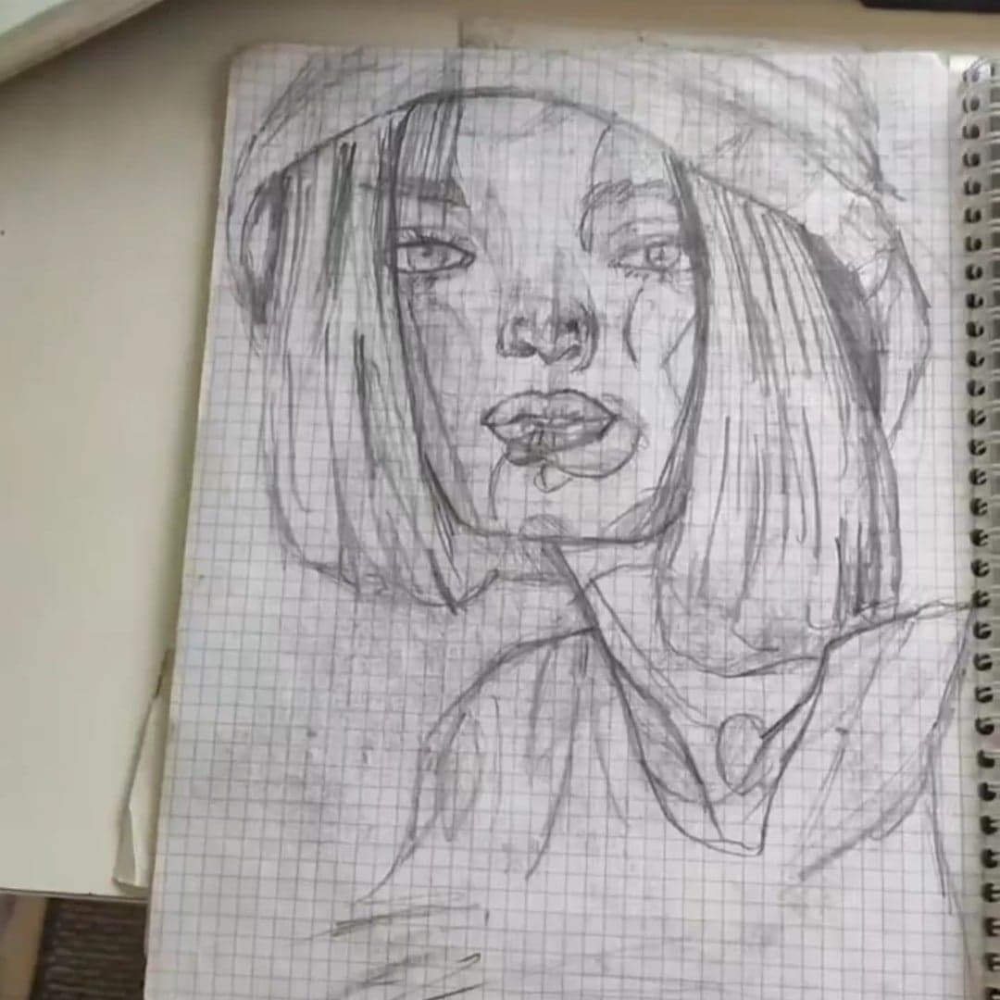
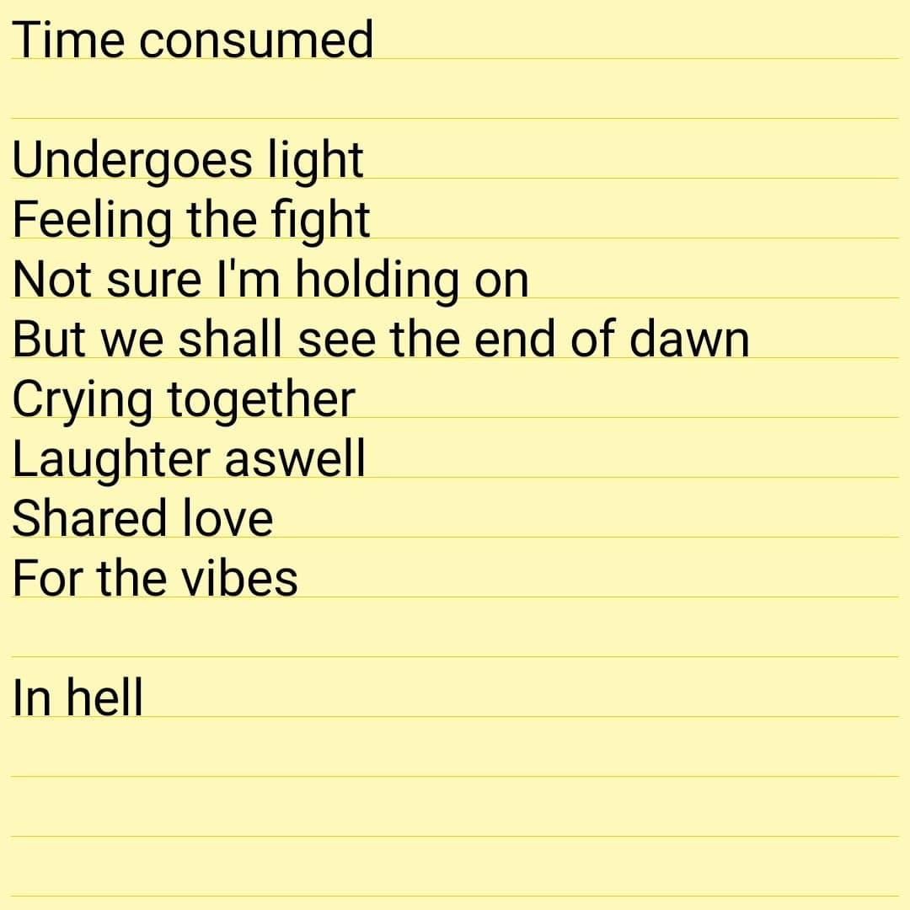
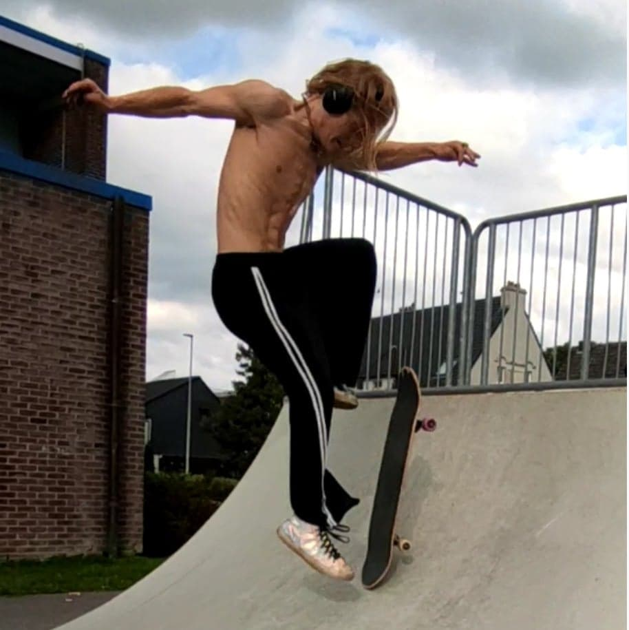

- Curriculum vitae
- ervaringen
- hobbies
- contactgegevens
| hobbies |
| tekenen:
realistisch tekenen/ fotografisch tekenen zijn mijn favoriete subcategorieen van tekenen. het gezicht van de mens is mijn favoriete aspect om te tekenen omdat dat (in mijn ogen)
het moeilijkste is om juist te doen. 1 klein detail kan jou een andere persoon geven.
het is een heel rustgevende hobby. Heel fijn om samen te komen, een teetje en je potlood.
soms is het zo simpel als dat om je te amuseren.
|
 |
| schrijven:
deze hobby is ontstaan door een gedichtenwedstrijd die ik in het tweede middelbaar heb gewonnen.
Ik had het gedicht tijdens de uitleg van de competitie snel geschreven.
hierdoor, aangezien dit echt een talent bleek te zijn ben ik begonnen.
Van duizenden gedichten, Engels of Nederlands, tot een heel boek schrijven.
Dit is mijn ware uitlaatklep.
|
 |
| skateboarding:
Skateboarding heb ik altijd cool gevonden.
Je board draait alle kanten op en als nog krijg je het terug onder je voeten.
Door 2 vrienden van mij te zien skateboarding en uiteindelijk eens mee te gaan, had ik een tweede hands board gekocht.
Nu krijg ik skateboard decks en is skateboarding mijn mentale reset knop geworden.
gewoon ik, muziek, een skatepark en mijn houten paard.
|
 |